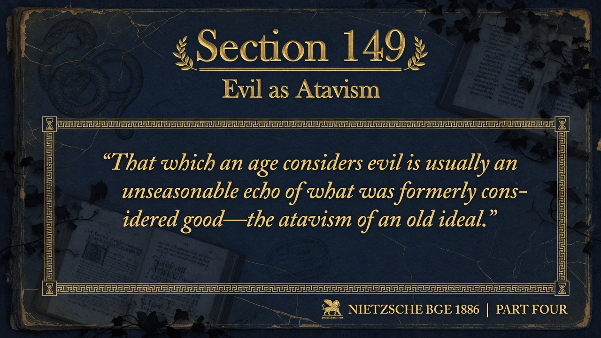
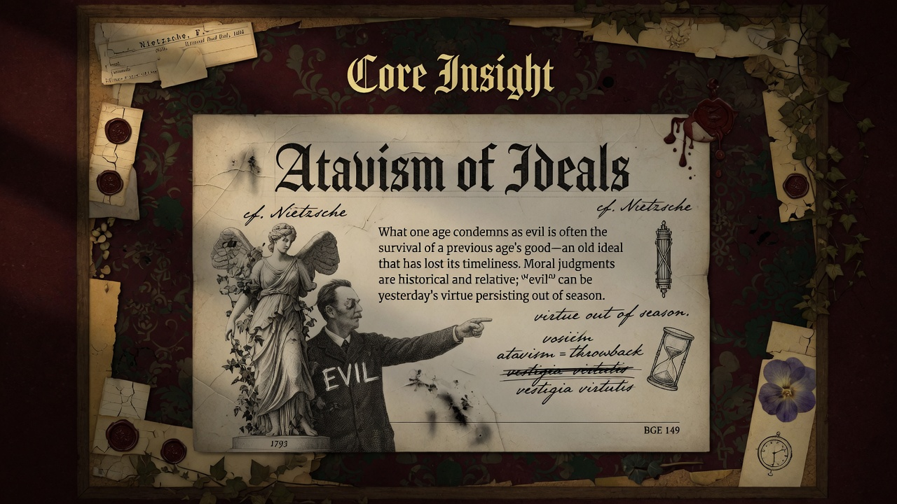
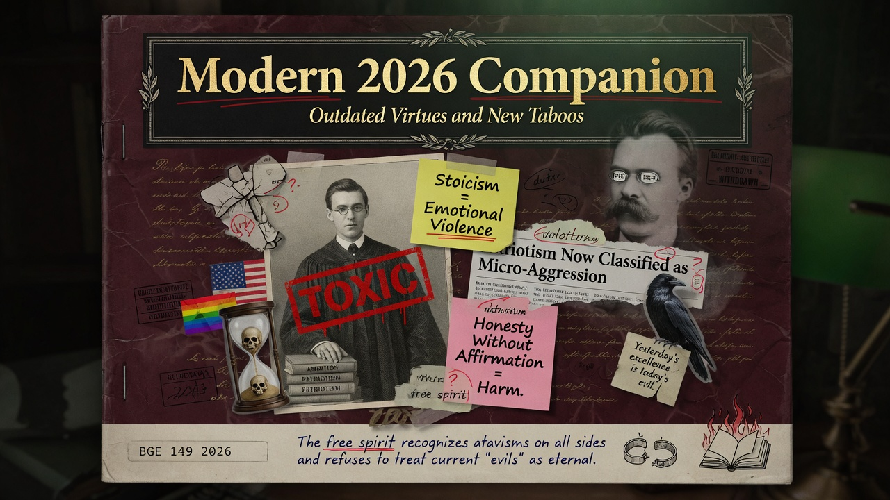

What an age calls evil is often yesterday's good out of season. Moral condemnation frequently mistakes old ideals for eternal wickedness. Evil can just mean the past showing up at the wrong time.
Section 149 states: “That which an age considers evil is usually an unseasonable echo of what was formerly considered good—the atavism of an old ideal.”
Nietzsche offers a genealogical insight: moral categories are historical. What one epoch condemns as evil is frequently the lingering presence of a prior epoch’s virtue or ideal—an atavism, a throwback that no longer fits the new conditions or power relations. The “evil” is not an eternal opposite of good but a survival that has become untimely. Yesterday’s nobility or piety can appear as today’s vice or superstition.
The remark undercuts the absolutism of today's moral judgments. It suggests that much of what is passionately denounced as evil may be better understood as an outdated adaptation rather than a positive force of corruption. Conversely, what an age praises as good may itself be a new atavism in the making. Moral history is a succession of such shifts, not a steady progress toward truth.
Evil is often the good of a previous age persisting beyond its time; moral condemnation frequently misreads historical atavism as metaphysical wickedness.
This epigram is central to the book’s project of historicizing morality and preparing the revaluation of values. It aligns with the critique of “modern ideas” and the demand that the free spirit think beyond the prejudices of his own time. Part Four’s short form delivers the insight in compressed, memorable form before the longer treatments in later parts and subsequent books.
In 2026, many once-admired traits—stoic self-reliance, national loyalty, religious faith, entrepreneurial ruthlessness, even certain forms of honesty—are recast by influential voices as evil, toxic, or dangerous. At the same time, new “goods” may be tomorrow’s embarrassments. The free spirit refuses to treat the current table of vices and virtues as final. One asks of any moral panic: whose old ideal is being attacked as evil, and what new power configuration requires its suppression? This historical eye protects against both reactionary nostalgia and progressive self-righteousness.


